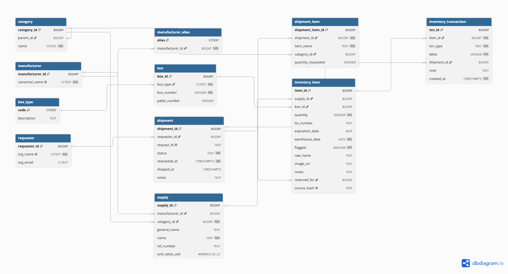
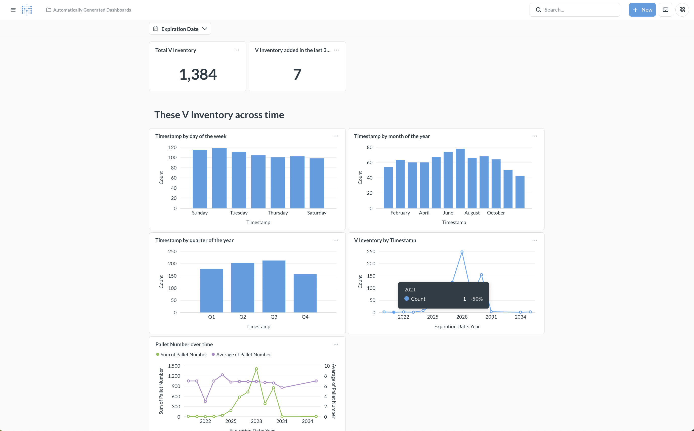

Blueprints for Pangaea redistributes surplus medical supplies from US hospitals to under-resourced clinics abroad. Inventory across chapters lived in shared spreadsheets: no integrity guarantees, no audit trail, fuzzy duplicate item names, and every lookup was a manual scan.
Twelve tables in BCNF: supplies are canonical (manufacturer aliases fold messy
vendor names into one row), physical stock lives in inventory_item →
box → pallet, and every movement writes an immutable row to the
trigger-maintained inventory_transaction ledger — current quantities are
derived from the ledger, never hand-edited. Reads lean on SQL views
(v_inventory, v_kpis) so joins live in the schema, not in
application code.

Live numbers from the production database:
Backend latency fell from roughly 1.2 seconds to ~40 milliseconds
against the spreadsheet-backed workflow. Fuzzy search over 1,211 supply names runs in
33ms via the supply_name_trgm GIN index, a
stock-and-expiry report joined across the normalized schema in 5ms,
and the expired-items integrity check in 0.4ms.
Live queries against the real database — the fuzzy search, stock-and-expiry report, and integrity check timed above, running for real:
One native binary (b4p-service, ~1,000 lines of C++20 on Drogon +
libpqxx) replaces the Python monitor script and puts an HTTP API in front of the
database. It does two jobs in a single process: serve the inventory as JSON
(/health, /api/supplies, /requests,
/inventory/availability), and every five minutes pull the live dashboard
feeds, insert unseen rows in one transaction, and run six SQL integrity checks.
How it links up: the service sits between the live Render dashboard feeds and
local Postgres. The sync side pulls from the feeds and writes to the database; the
serve side reads from the same database and re-exposes it in the dashboard's own
format — so the frontend, Metabase, and plain curl can all point at one
process.
┌──────────────────────────────────────────────┐
Render backend │ b4p-service (one process) │
(live feeds) │ │
/api/supplies ──────► │ sync.cpp ── every 300 s ──┐ │
/requests ──────► │ (drogon::HttpClient, │ one txn │
│ async, main loop) ▼ │
│ db.cpp ────────► Postgres (b4p)
dashboard / curl │ ▲ │
/health ──────► │ main.cpp handlers ────────┘ │
/api/supplies ──────► │ (drogon worker threads, normalize.cpp │
/requests ──────► │ prepared statements) (pure functions) │
/inventory/availability ─► │
└──────────────────────────────────────────────┘The structure keeps each concern in one file:
main.cpp — wiring: HTTP route handlers, sync scheduling, config.db.cpp — owns the Postgres connection; every query is a named
prepared statement registered in one place, and all access goes through a
mutex-guarded transaction wrapper that commits on return and rolls back on
throw.normalize.cpp — the pure data-cleaning rules ported from the
Python loader (category/manufacturer canonicalization, box-label and date
parsing), pinned by a unit-test suite of real-world feed garbage like
"1 (full box)" and unicode hyphens.sync.cpp — the monitor port: async feed fetch, row fingerprinting,
the one-transaction sync, and the consistency checks./requests is
byte-identical to the production Render backend (verified by diffing normalized
output against live data), so the dashboard frontend can be repointed with zero
changes. The availability rule was reverse-engineered from production and
verified against all 1,384 live rows.md5(json.dumps(row, sort_keys=True)) hash the Python pipeline
wrote — reproduced byte-for-byte in C++, down to Python's separators and
\uXXXX escaping — so thousands of historical rows are recognized
instead of re-inserted. On its first run against production, the service
recognized all 1,384 existing rows and inserted zero.db.cpp is the only synchronization in the
service.The database feeds Metabase dashboards for HQ — total stock, intake over time, and expiry-year distribution straight off the SQL:

The system is rolling out nationwide to 14 university chapters, replacing the spreadsheet workflow entirely.